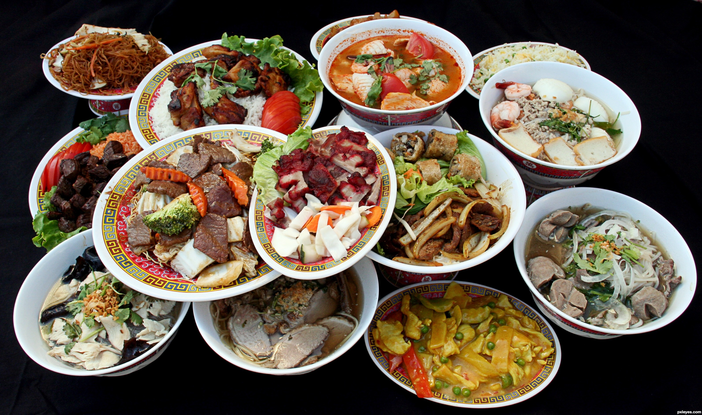
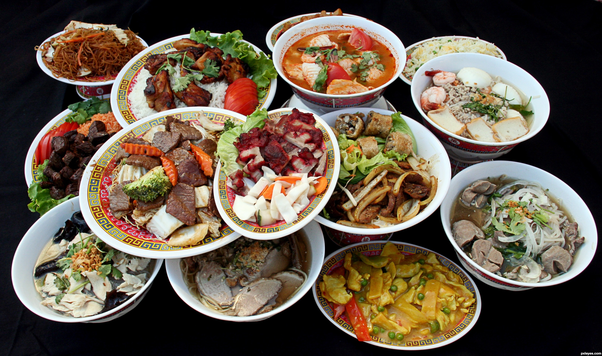
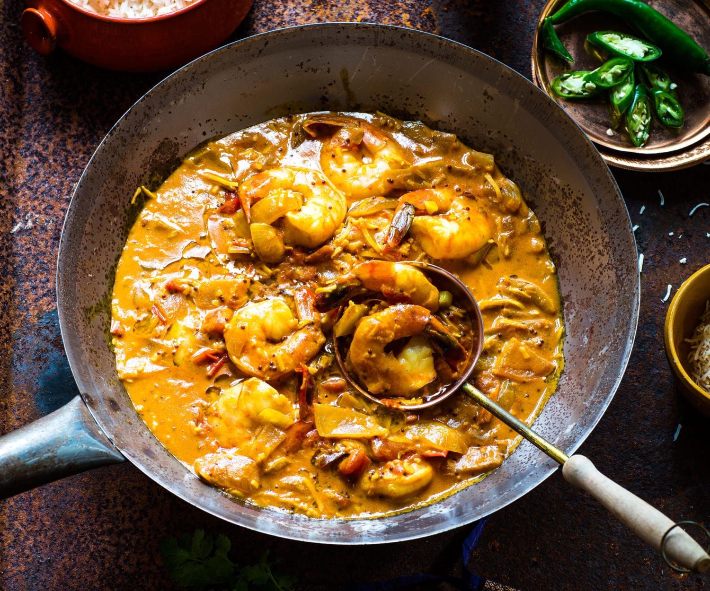
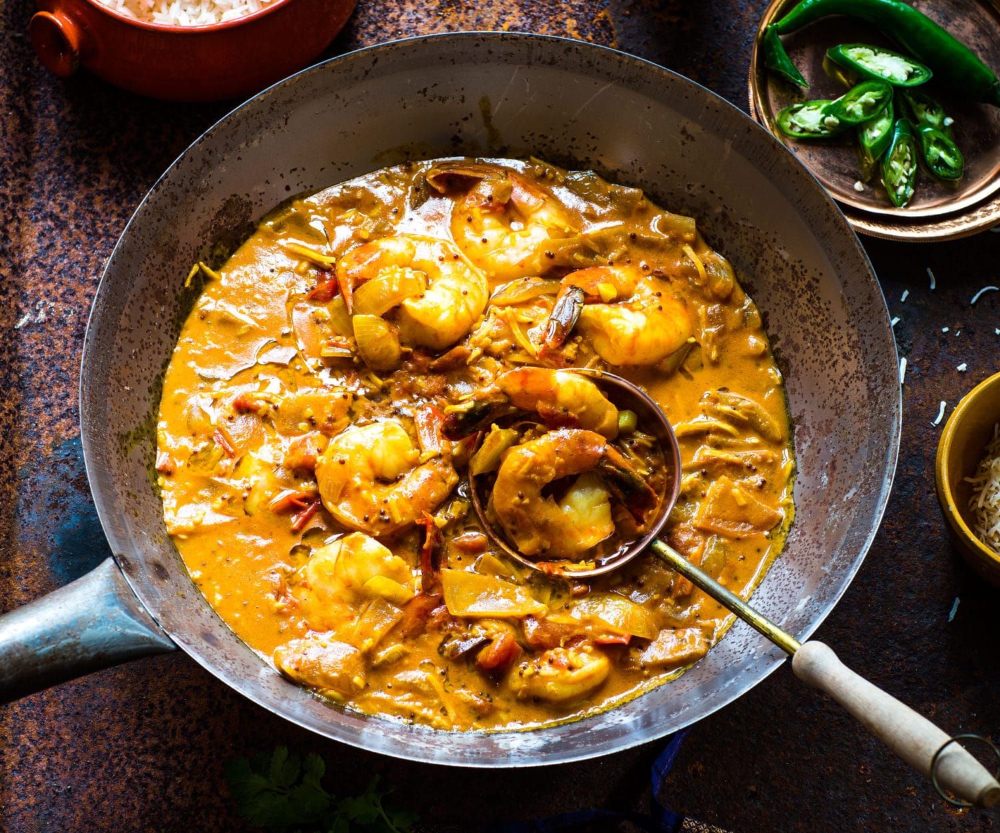
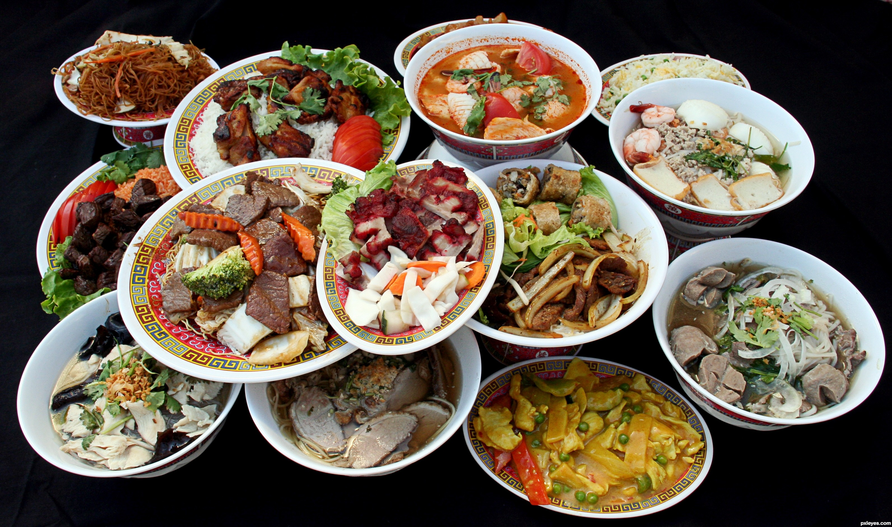
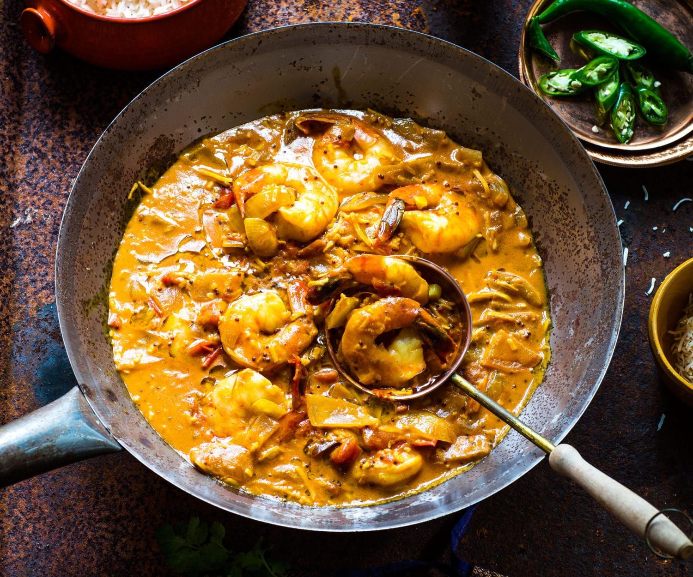

 



Asian Food includes several major regional cuisines: East Asian, Southeast Asian, South Asian, Central Asian, and Western Asian. A cuisine is a characteristic style of cooking practices and traditions, usually associated with a specific culture. Asia, being the largest and most populous continent, is home to many cultures, many of which have their own characteristic cuisine. Ingredients common to many cultures in the East and Southeast regions of the continent include rice, ginger, garlic, sesame seeds, chilies, dried onions, soy, and tofu. Stir frying, steaming, and deep frying are common cooking methods. While rice is common to most Asian cuisines, different varieties are popular in the various regions. Basmati rice is popular in the subcontinent, Jasmine rice is often found across the southeast, while long-grain rice is popular in China and short-grain in Japan and Korea. Curry is a common dish in southern, southeastern Asia and Japan and also found to some extent in other East Asian cuisines. Curry dishes with origins in India and other northern South Asian countries usually have a yogurt base while those in southern India, Sri Lanka and Southeast Asia generally use coconut milk as their foundation.
Enjoy The Life